Cesare Magli & Figli
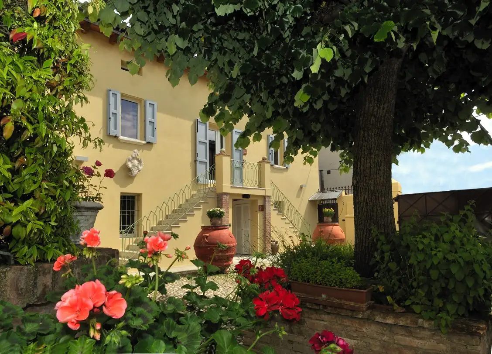
Per chi non si accontenta degli alberghi tradizionali e vuole qualcosa di speciale.For those who aren't satisfied with traditional hotels and want something special.
Sfoglia le camereBrowse the rooms →Ogni camera,
una vista su
un'altra epoca.Every room,
a view onto
another era.
Nel cuore di Molinella, antica cittadina della Pianura Padana, un borgo settecentesco accoglie gli ospiti in ambienti storici recuperati in chiave contemporanea. Ogni camera presenta una “vista” spazio-temporale e culturale diversa: lo stile di una residenza padronale, le atmosfere degli anni '30, l'epoca d'oro del design italiano, l'epopea dei toreri e dei cow boys, il genio di Ferdinand Porsche, la musica rock e le sue star.
In the heart of Molinella, an old town of the Po Valley, an 18th-century hamlet welcomes guests in historic spaces restored with a contemporary touch. Each room offers a different “view” across time and culture: a Po Valley manor house, the atmosphere of the 1930s, the golden age of Italian design, the saga of bullfighters and cowboys, the genius of Ferdinand Porsche, rock music and its stars.
Tutte le camere hanno il bagno privato, TV a schermo piatto, cassaforte, Wi‑Fi gratuito e frigobar. I piccoli animali sono i benvenuti.
Every room has a private bathroom, flat-screen TV, safe, free Wi‑Fi and minibar. Small pets are welcome.
Dal 1870, la stessa famiglia sotto gli stessi tetti.Since 1870, the same family under the same roofs.
Cesare Magli, proprietario terriero e commerciante, acquista il complesso per farne la sede di alcune delle sue attività.
Cesare Magli, landowner and merchant, buys the complex to house some of his businesses.
Il borgo diventa la residenza di due dei suoi figli. Ancora oggi appartiene agli eredi, che in parte lo abitano.
The hamlet becomes the home of two of his children. It still belongs to his heirs, who partly live here.
Il pronipote Paolo ristruttura integralmente il borgo e ne riserva una parte all'ospitalità.
His great-grandson Paolo has fully restored the hamlet and set part of it aside for guests.
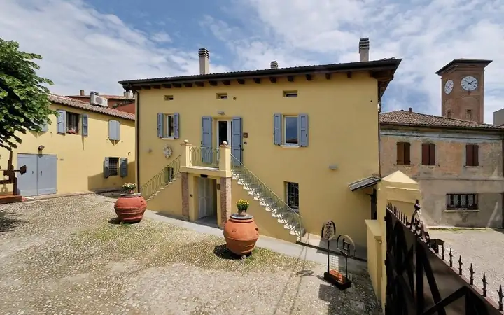
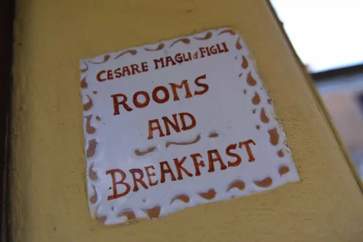
“Un rifugio coinvolgente per chi non si accontenta degli alberghi tradizionali. Perché i nostri ospiti sono un po' speciali.”“An immersive retreat for those who aren't satisfied with traditional hotels. Because our guests are a little special.”
Otto capitoliEight chapters
Scegliete l'epoca in cui dormire stanotte.Choose the era you'd like to sleep in tonight.
- ICesare MagliLa camera padronaleThe master's room2 · 30 m²
- IILa DeliziosaRaccolta, per una personaIntimate, for one1 · 15 m²
- IIIGarden SuiteIngresso indipendente, su due livelliPrivate entrance, on two levels4 · 50 m²
- IVFaccettanerabellabissinaArredi e quadri originali degli anni '30Original 1930s furniture and paintings2 · 20 m²
- VDesign ManiaOmaggio ai maestri del designA tribute to the design masters2 · 30 m²
- VITori, toreri e cow boysL'epopea dei cuori coraggiosiThe saga of brave hearts2 · 25 m²
- VIITribute to Ferdinand PorscheDue camere comunicantiTwo connecting rooms3–4 · 40 m²
- VIIIRock StarsGli indimenticabiliThe unforgettables2–3 · 40 m²

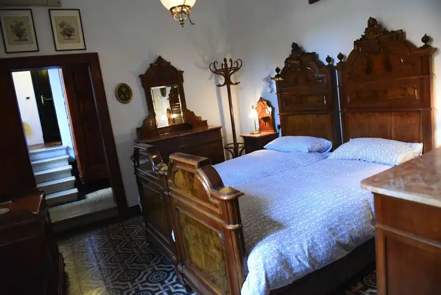
Cesare Magli
La camera padronale: quella che dal XIX secolo accoglieva i padroni di casa.
The master bedroom: since the 19th century, the room of the masters of the house.
Un'atmosfera di rango, tra letti di legno massiccio e suppellettili originali. Il bagno, concepito come usava allora nelle residenze padronali, è una vera “sala da bagno”: il grande specchio, i lavandini appaiati, la splendida vasca.
A stately atmosphere of solid-wood beds and original furnishings. The bathroom, conceived as was customary in manor houses of the time, is a true “bathing room”: the large mirror, twin basins and a splendid bathtub.
Il ritratto dei padroni di casa è ancora appeso alla parete.The portrait of the masters of the house still hangs on the wall.
Capitolo IIChapter II
la Deliziosa
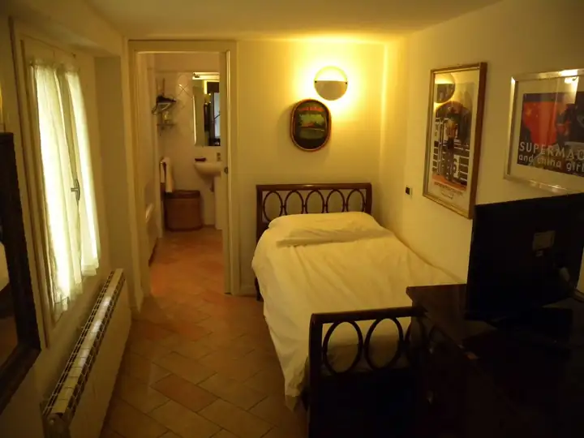
Un ambiente raccolto all'interno della residenza padronale, perfettamente accessoriato come camera singola, con ampio bagno privato.
A cosy room inside the manor house, fully equipped as a single, with a spacious private bathroom.
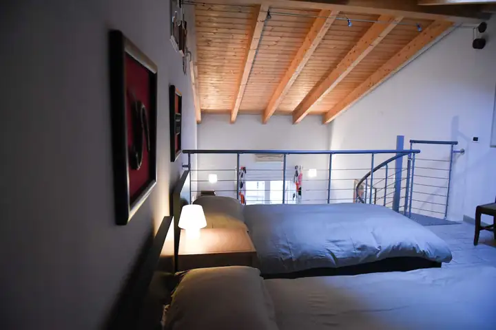
Garden Suite
Immersa nella quiete della residenza, offre privacy e tranquillità in un contesto elegante e fresco, con ingresso indipendente.
Set in the quiet of the residence, it offers privacy and tranquillity in an elegant, airy setting, with its own private entrance.
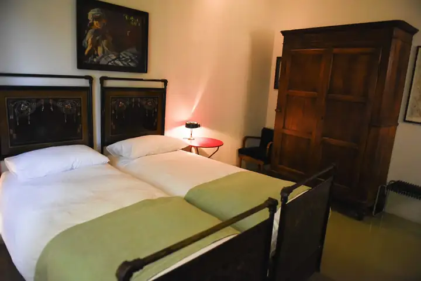
Faccettanerabellabissina
Sensazioni e nostalgie di un'epoca che fu.
Feelings and nostalgia for a bygone era.
Gli arredi e i quadri, tutti originali degli anni '30, evocano le atmosfere coloniali di quel decennio.
The furniture and paintings, all original pieces from the 1930s, evoke the colonial atmosphere of that decade.
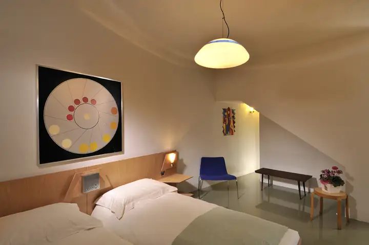
design
mania.
Un omaggio ai maestri del design moderno e contemporaneo. I pezzi forti:
A tribute to the masters of modern and contemporary design. The highlights:
- Il letto — disegnato da Giò Ponti nei primi anni '50 per la riapertura di un prestigioso albergo napoletanoThe bed — designed by Giò Ponti in the early 1950s for the reopening of a prestigious Naples hotel
- I poster — di Armando Testa, per una campagna del brandy MartiniThe posters — by Armando Testa, for a Martini brandy campaign
- La scrivania — di Borsani per OlivettiThe desk — by Borsani for Olivetti
- La radio — disegnata da Zanuso negli anni '60 per BrionvegaThe radio — designed by Zanuso in the 1960s for Brionvega
- Il lampadario — dalla bottega veneziana VeniniThe chandelier — from the Venetian workshop Venini
- I disegni — dalla collezione privata di Dino Gavina per SimongavinaThe drawings — from Dino Gavina's private collection for Simongavina
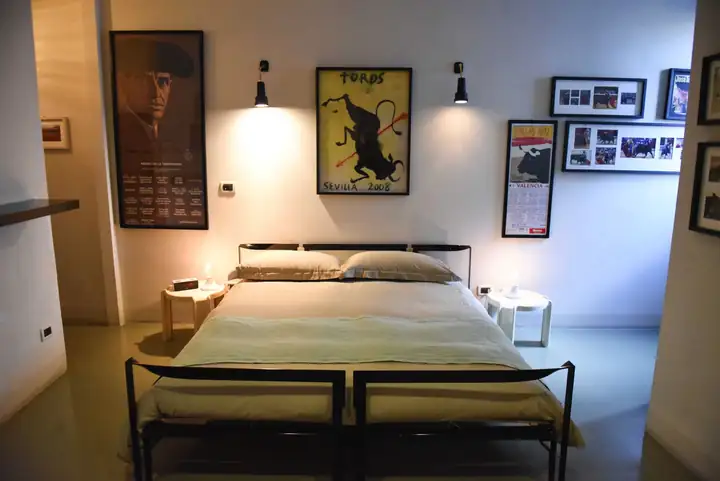
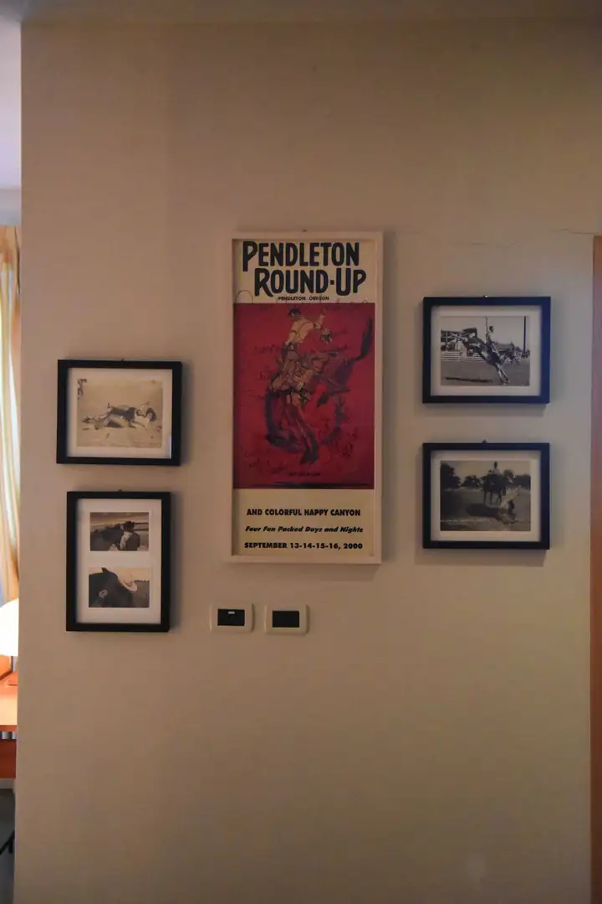
Tori, toreri — & — cow boys
L'epopea dei cuori coraggiosi.
The saga of brave hearts.
Foto di scena originali dei western “cult” degli anni '40 e '50: Yul Brynner, John Wayne, Burt Lancaster, Charles Bronson, Gregory Peck, Gary Cooper.
Original film stills from “cult” westerns of the 1940s and '50s: Yul Brynner, John Wayne, Burt Lancaster, Charles Bronson, Gregory Peck, Gary Cooper.
I toreri El Juli, José Tomás ed Enrique Ponce; i cow boys dei rodei Casey Tibbs e John Brasil.
Bullfighters El Juli, José Tomás and Enrique Ponce; rodeo cowboys Casey Tibbs and John Brasil.
I quadri di Duke Beardsley, artista di punta della Western Art contemporanea, e le locandine del rodeo di Pendleton e della Temporada della Real Maestranza di Siviglia.
Paintings by Duke Beardsley, a leading contemporary Western artist, and posters from the Pendleton rodeo and the Real Maestranza season in Seville.
“Vanessa”, disegnato da Carlo Scarpa per Simongavina.
“Vanessa”, designed by Carlo Scarpa for Simongavina.
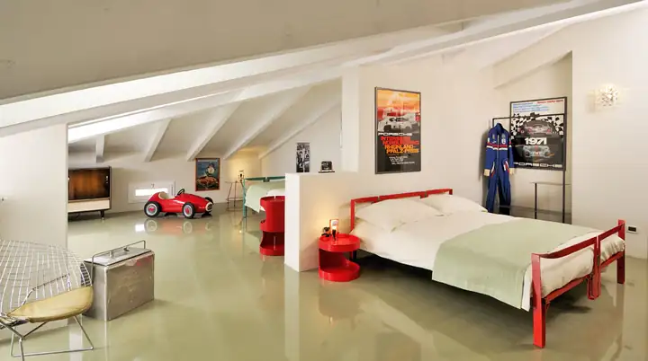
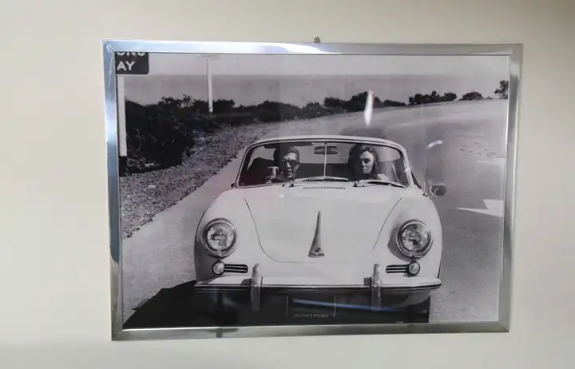
Tribute to Ferdinand Porsche
Il genio e lo stile dell'uomo che ha rivoluzionato l'automobile.
The genius and style of the man who revolutionised the automobile.
- ConfigurazioneLayout
- 2 camere comunicanti: 1 matrimoniale + 1 singola2 connecting rooms: 1 double + 1 single
- AnfitrioniHosts
- Paul Newman, Steve McQueen, James Dean, Hans Stuck, ritratti a bordo delle Porsche più prestigiosePaul Newman, Steve McQueen, James Dean, Hans Stuck, pictured aboard the most prestigious Porsches
- Automobilia
- Una tuta da pilota originale usata nelle gare di Goodwood, una vetturetta a pedali Giordani, un mini-frigo Coca-ColaAn original racing suit worn at Goodwood, a Giordani pedal car, a Coca-Cola mini-fridge
- ArrediFurniture
- Letto “Vanessa” di Carlo Scarpa, poltrone di Bertoia“Vanessa” bed by Carlo Scarpa, armchairs by Bertoia
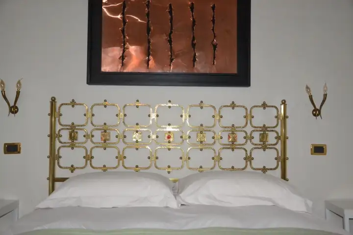
Rock
Stars
Gli indimenticabili che hanno segnato un'epoca, tra le note mitiche delle chitarre rock.
The unforgettables who defined an era, amid the legendary sound of rock guitars.
- SETLIST · CESARE MAGLI & FIGLI
- The Beatles
- The Rolling Stones
- The Velvet Underground
- Jimi Hendrix
- Led Zeppelin
- Pink Floyd
- David Bowie
- Posto d'onore: Johnny CashPlace of honour: Johnny Cash
Camera matrimoniale con letto-scultura di Pomodoro e salottino sul soppalco con divano letto.
A double room with a sculpture-bed by Pomodoro and a small lounge with a sofa bed on the mezzanine.
I dettagli della casaThe details of the house
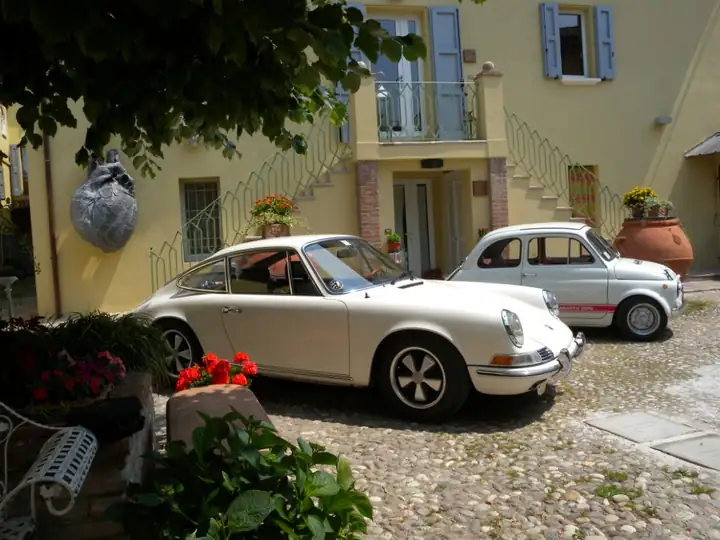
Per chi viaggia su due ruoteFor travellers on two wheels
Un ampio garage per il ricovero delle bici al chiuso, con un'officina completa di tutte le attrezzature per il rimessaggio e ogni tipo di riparazione. Da qui si parte verso le Valli di Comacchio, il Delta del Po, la Vallesanta e l'Oasi del Quadrone, o si pedala verso Bologna, Ferrara, Ravenna e Imola. Per escursioni in bicicletta e in moto.
A large indoor garage for bicycles, with a workshop fully equipped for storage and any kind of repair. From here you set off for the Valli di Comacchio, the Po Delta, the Vallesanta and the Oasi del Quadrone, or ride to Bologna, Ferrara, Ravenna and Imola. For cycling and motorcycle trips alike.
Navetta su richiestaShuttle on request
Da e per le fiere, gli aeroporti e le stazioni ferroviarie di Bologna, Ferrara e Forlì. Su richiesta anche shuttle personalizzati verso le mete dei dintorni.
To and from the trade fairs, airports and railway stations of Bologna, Ferrara and Forlì. Custom shuttles to nearby destinations on request.
Amici a quattro zampeFour-legged friends
I vostri piccoli amici sono nostri ospiti benvenuti.
Your little friends are our welcome guests.
In ogni soggiornoWith every stay
- Climatizzazione, TV satellitare, frigobar, cassaforteAir conditioning, satellite TV, minibar, safe
- Wi‑Fi e parcheggio riservato gratuitiFree Wi‑Fi and reserved parking
- Biciclette a disposizioneBicycles for guests
- Lavanderia e stireria su richiestaLaundry and ironing on request
- Late check-out, se disponibileLate check-out when available
Al centro di un triangolo idealeAt the centre of an ideal triangle
Nel centro storico di Molinella: punto di partenza per Bologna, Ferrara, Ravenna, Imola e Faenza, per le oasi delle Valli di Comacchio e del Delta del Po, e per i passi della Futa e della Raticosa, dove ancora transita la Mille Miglia.
In Molinella's old town: a base for Bologna, Ferrara, Ravenna, Imola and Faenza, for the nature reserves of the Valli di Comacchio and the Po Delta, and for the Futa and Raticosa passes, still on the route of the Mille Miglia.
- BolognaFiere e FerraraFiere in 25 minutiBolognaFiere and FerraraFiere in 25 minutes
- FICO Eataly World a 20 kmFICO Eataly World, 20 km
- Autodromo di ImolaImola racetrack
- Museo delle Ceramiche di FaenzaFaenza Ceramics Museum
- Dozza e il “Muro dipinto”Dozza and its “Muro dipinto”
- Terme di Castel San PietroCastel San Pietro spa
RiconoscimentiRecognition
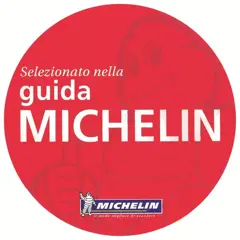
Scriveteci,
vi aspettiamo.Write to us,
we'll be expecting you.
Prenotate direttamente con la casa: un messaggio, una telefonata o una email.
Book directly with the house: a message, a call or an email.